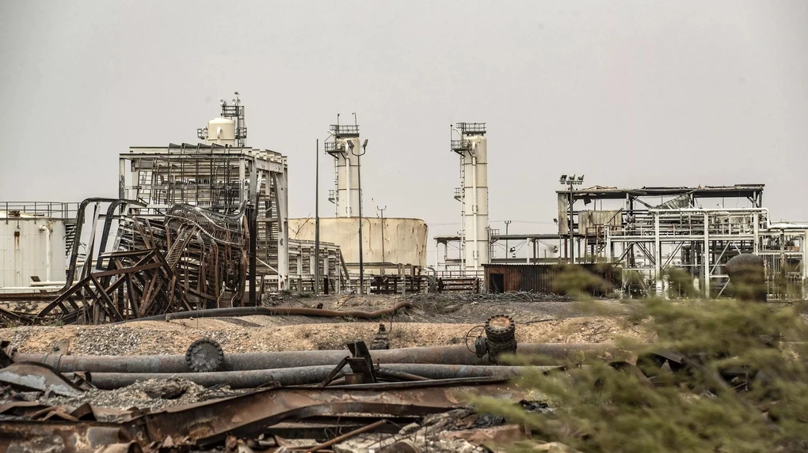

Ban đầu chúng ta tập trung nhiệm vụ phục vụ khách với chỉ tiêu cao nhất trong năm
Bây giờ chúng ta phải thay đổi mục tiêu khác để đạt được kết quả mong muốn
Mục tiêu 1: thay đổi cơ sở vật chất và nâng cao
Dải Gaza, nơi sinh sống của 2,3 triệu người, có diện tích 365 km2. Gaza dài 41 km và mất chưa đầy một tiếng để lái xe từ Beit Hanoon ở rìa phía bắc tới Rafah ở phía nam. Khu vực này bị tàn phá diện rộng khi quân đội Israel liên tục oanh tạc từ 7/10, để trả đũa vụ đột kích của Hamas.
Hôm nay thời tiết ở Hà Nội ẩm ướt, có 26 oc theo thang do log 10c
